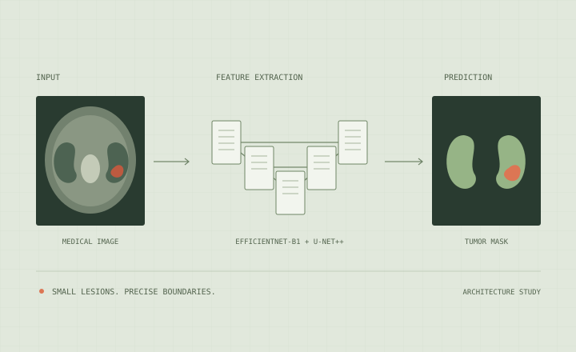
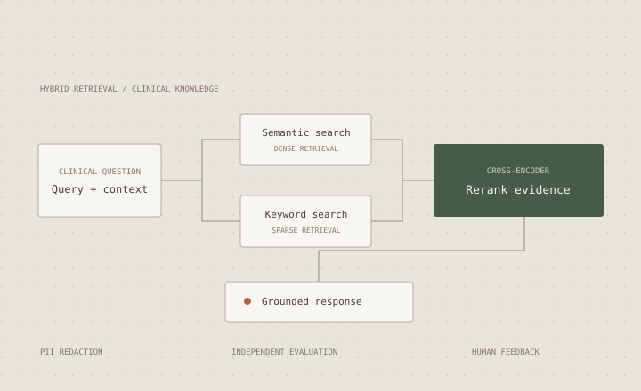
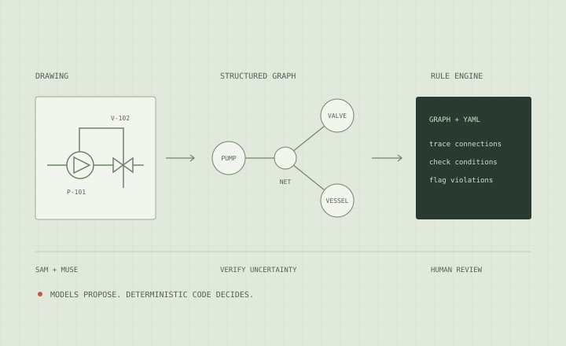
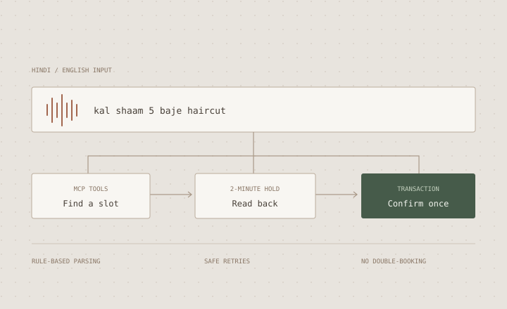

PROJECT / 01Kidney Tumor Segmentation
Finding the small details that matter. A double U-Net++ with an EfficientNet-B1 backbone for small tumor localization and precise lesion boundaries.
AI / ML ENGINEER & DATA SCIENTIST
PORTFOLIO / 2026I explore how AI can turn data into better decisions and complex processes into useful systems. I'm interested in thoughtful experimentation, dependable models, and measurable value for businesses and the people they serve.
01 / SELECTED WORK

PROJECT / 01Finding the small details that matter. A double U-Net++ with an EfficientNet-B1 backbone for small tumor localization and precise lesion boundaries.

PROJECT / 02Clinical knowledge, grounded in the source. Hybrid retrieval and cross-encoder reranking with PII redaction, conversational memory, and independent LLM evaluation.

PROJECT / 03From scanned engineering drawings to structured graphs, bills of materials, and design-rule findings. SAM 3.1 locates symbols; Muse reads them, an agent reviews uncertainty, and deterministic code checks the rules. Evaluated on generated sheets, not plant safety compliance.

PROJECT / 04A self-hosted booking backend for local businesses, with Hindi/English input, expiring slot holds, waitlists, and retry-safe confirmations. SQLite transactions prevent double-booking. A browser demo with rule-based parsing, no LLM, and no real-device Alexa+ validation.
02 / EXPERIENCE
Jun 2025 - Sep 2026
HEALTH TECHNOLOGYBuilt reusable ML infrastructure and applied AI systems, from distributed training to clinical imaging and enterprise knowledge retrieval.
Jan 2024 - Apr 2024
CLOUD INFRASTRUCTUREDeveloped cloud-based geo-routing with traffic management and load balancing. Supported Azure provisioning, monitoring, troubleshooting, and incident resolution for enterprise infrastructure.
03 / RESEARCH
IEEE CONECCT 2026A Comparative Analysis of Optimized Machine Learning Pipeline with Explainable AI for Sleep Disorder Classification
04 / TECHNICAL SKILLS
LLMs · Fine-tuning · RAG · Vector databases · LangChain · MCP
Artificial Intelligence · Machine learning · Deep learning · Medical imaging
Distributed training · Docker · Git · CI/CD · LangSmith
Python · C++ · R · SQL · PyTorch · TensorFlow · FastAPI · Streamlit
AWS · Azure · Google Cloud
05 / A LITTLE CONTEXT
I'm interested in how AI systems learn from data, reason over information, and support decisions in complex environments. I want to explore the choices that make these systems useful: framing the right problem, evaluating models carefully, and understanding their limitations. My career interests lie in connecting research with practical engineering to reduce repetitive work, improve access to knowledge, and create value for businesses and communities. For me, progress means balancing model performance with reliability, human judgment, and a clear understanding of the people a system serves.
Manipal Institute of Technology, MAHE
8.99 / 10 CGPAPillai College of Engineering
8.71 / 10 CGPA